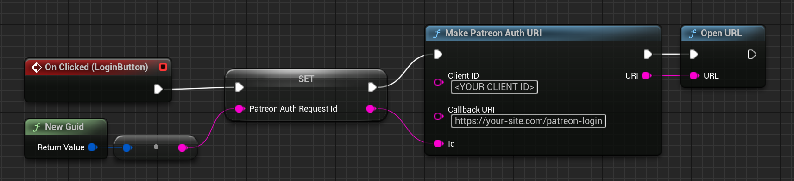

Custom Setup & Usage
If you plan to run your own web server to handle part or all of the authentication and communication with Patreon's API, then this section is for you.
Why do it this way?
If you have your own account system (e.g. maybe you are developing a MMO) then it may make the most sense to associate your users' accounts with their Patreon accounts and store their access tokens alongside the other account data you have for them. In this way, you would just need to ask them to connect their Patreon account to your servers once, then when they login to your game client you can send their Patreon info alongside whatever other account details your game receives.
Alternatively, if you are concerned about the security of your Patreon Client Secret, the only completely reliable way to prevent your users from
ever being able to extract it is to prevent the application from ever seeing it in the first place. Even without your own account system, you could
still run a web service which just handles the code exchange to get an access token after a user logs in to Patreon, then either ask the user to
copy-and-paste this into the game or cache the access tokens on your server and provide an API to fetch them.
If you find that the information we retrieve from the Patreon API in Get User Info is insufficient for your use case, then you may also want to go the custom route to make the specific API requets you need (if you find yourself going down this road, though, please drop me a note so I can consider supporting your use case better by default in the future).
Several BP nodes for making HTTP requests are provided for those who prefer to work entirely in blueprints, and helpers are provided for C++ developers to simplify things from that side as well. If you feel there is anything missing to enable the workflow you want to implement, or anything could be added to help make your life easier when implementing a custom solution, please feel free to let me know!
Example
As an example, let's say you just want to protect your Client Secret, so you have a web server somewhere which can receive the authentication callback
from Patreon after a user signs in and accepts to sharing data with your applicatoin.
First, the authentication & consent page the user gets sent to must be parameterized with a Redirect URI pointing at your server. There are several nodes to make this easier from blueprint:

Because the user will be redirected to your web server, the game client will not be able to know when the authentication has completed and a new access token is available.
Some people will simply display the access token on the redirect page and ask the user to copy-and-paste it into a text field in the game. If you want to avoid this
and make the experience a little more automatic and seamless, though, you can create and send a unique ID with your request (the Patreon Auth Id in the image above).
This value will also be sent to the redirect URL as a state query param, so both the game client and your server have the same Id which can be used to tie the
two requests together. See Patreon's documentation for more information.
In the example above we are creating a new Id string for every request, but if you have another way of identifying your users (e.g. if you have your own account service this could be their user ID or some other identifying string you create for them). Once the user returns to the game client, you can then send another request to your server asking for their access token, passing the same Id so the server can look it up among all the patreon users it has processed:

For any questions, help, suggestions or feature requests, please feel free to contact me at nbpsup@gmail.com